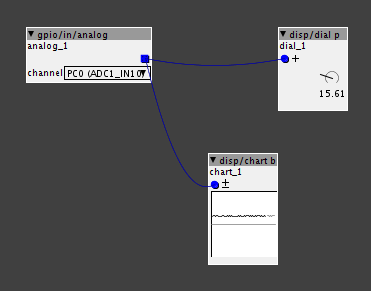
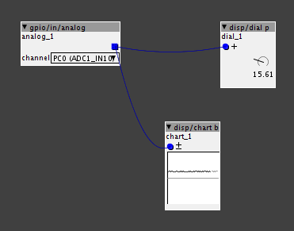

Here is a screenshot, I have nothing attached to the board right now...
I checked multiple ports and its the same unilaterally...

Not sure what else to say about that, but I cant hook up a pot...

Here is a screenshot, I have nothing attached to the board right now...
I checked multiple ports and its the same unilaterally...

Not sure what else to say about that, but I cant hook up a pot...
No worries, we'll get your sorted.
Firstly, have nothing attached to the board doesn't really mean anything unless there is something wrong with your board. You will only get a zero when your voltage divider is set to pull all the voltage to ground. In this case, you are using a pot as your voltage divider, so only when connecting it up can we see what result you are getting.
Connect the wiper pin to analog in, one of the outer pins to VDDA and the other to GND.
The following link will assist..
Once you have done this, please run your readings and let us know how you go.
If you are still getting the same problem, at least we know that the standard wiring as I describe above, does not work for you. Then the next step will be to check the wiring and soldering etc, for proper connection to ensure there are no shorts or anything..
Thanks, I think it was a short in one of my breadboard wires to start and I disconnected everything and saw it in this state and was understandably alarmed...
I swapped out all the wires and it was fine